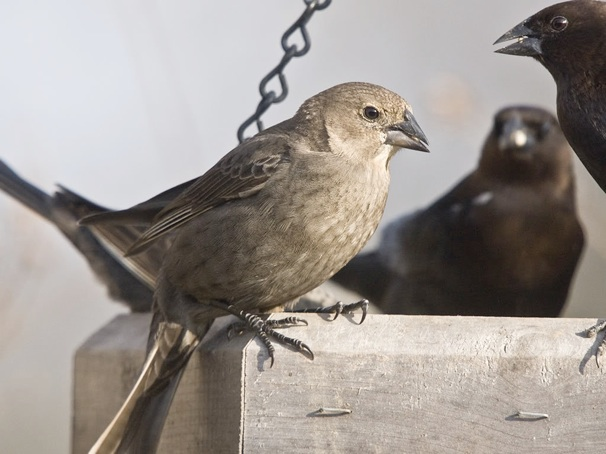

Publications
Kohn, G. M.(in prep). Pseudomale Courtship Behavior Observed in Female Gouldian Finch (Chloebia gouldiae).
Kohn, G. M.(in prep). Self-organized kindergarten: Age assortment in flocks of Roseate spoonbill (Platalea ajaja).
Tichko, P., Kohn. G. M.(in Press) Is there a poverty of the stimulus? Lessons from developmental systems. Journal of Theoretical and Philosophical Psychology (preprint)
Kohn, G. M, Mateo, T., Gibson, A., & Galloway, C.(in press) Female assortment in Gouldian Finch (Chloebia gouldiae) Flocks: A case of female-driven social niche construction? Animal Behaviour (preprint)
Davies, H. B., Perkes, A., Kohn, G. M., and White, D. J. (in revision). Individual effort, social strategies, and cognitive skills influence nest prospecting decisions in Brown-headed cowbirds (Molothrus ater). Animal Behaviour
Kohn, G. M. (2024). In Defense of the Whole: Behavioral Novelty as a Reflection of Organismal Agency. In The Riddle of Organismal Agency (pp. 153-170). Routledge.
Kohn, G. M.(2024). Revisiting TC Schneirla’s “Interrelationships of the ‘Innate’and the ‘Acquired’in Instinctive Behavior”(1956). Biological Theory, 1-10.
Kohn, G. M. (2024). A Discussion on Instinct, Paris, 1954. Biological Theory, 1-13.
Kohn, G. M., & Kostecki, M. (2024). The contingent animal: does artificial innateness misrepresent behavioral development?. Adaptive Behavior
Moussaoui, B., Overcashier, S. L., Kohn, G. M., Araya-Salas, M., & Wright, T. F. (2023). Evidence for maintenance of key components of vocal learning in ageing budgerigars despite diminished affiliative social interaction. Proceedings of the Royal Society B
Kohn, G. M., Nugent, M.R., Dail, X., (2022) Juvenile Gouldian Finches (Erythrura gouldiae) form sibling sub-groups during social integration, Developmental Psychobiology
Tichko, R., Bird, K, A., & Kohn, G.M., (2021). A commentary on “Origins of music in credible signaling” by Mehr, Krasnow, Bryant, & Hagen. Beyond “Consistent With” Adaptation: Is There a Robust Test For Music Adaptation?, Behavioral and Brain Sciences, 44
Keen, S. C., Odom, K. J., Webster, M. S. Kohn, G. M., Wright, T. F. Araya-Salas, M. S. (2021). A machine learning approach for classifying and quantifying acoustic diversity. Methods in Ecology and Evolution, 23-34
Ramis, F., Mohr, M., Kohn, G., Gibson, Q., Bashaw, M., Maloney, D., & Maple, T. (2020). Spatial Design of Guest Feeding Programs and Their Effects on Giraffe Participation and Social Interactions. Journal of Applied Animal Welfare Science, 1-20.
Kohn, G. M, (2019) How social systems persist: Learning to build a social network in an uncertain world, Animal Behaviour, 154, 1-6 [link here] – most downloaded article
Kohn, G. M. (2018) Female vocalizations predict reproductive output in Brown-headed Cowbirds (Molothrus ater), PLOS one [Link]
Kohn, G. M., (2017) Friends give benefits: Autumn social familiarity preferences predict reproductive output, Animal Behaviour, 201- 208 [PDF]
– October 2017 Editors Choice Article
Tobin, C., Medina-Garcíaa. A., Kohn. G. M., Wright, T. F., (2017) Does Audience Affect the Structure of Warble Song in Budgerigars (Melopsittacus undulatus)?, Behavioural Processes, 163, 81-90 [PDF]
van Oers, K., Kohn, G. M., Hinde, C. A., Naguib, M., (2015), Parental food choice affects the expression of personality in a natural bird population, Frontiers in Ecology and Evolution, 12(1), S10 [PDF]
Kohn, G. M., Meredith, G. R., Magdaleno, F. R., King, A. P., & West, M. J., (2015) Sex differences in Familiarity Preferences within Fission-Fusion Brown-headed Cowbird (Molothrus ater) Flocks, Animal Behavior, 106, 137-143 [PDF]
– See accompanying write-up in 野鳥の不思議解明最前線 magazine (in Japanese)
– See accompanying write-up in PBS update Magazine for IU Psychology Department
– See accompanying feature on NPR’s Moment of Science
Kohn, G. M., King, A. P., Pott, U. & West, M. J., (2013) Robust fall social displays predict spring reproductive behavior in Brown-headed Cowbirds (Molothrus ater ater), Ethology, 119, 511-521 [ PDF ]
Kohn, G. M., King, A. P., Dohme, R., Meredith, G. R. & West, M. J., (2013) Robust autumn social attributes predict spring courtship skills in juvenile female Brown-headed Cowbirds (Molothrus ater), Animal Behaviour, 85, 727-732 [ PDF ]
-See accompanying write-up in The Journal of Experimental Biology.
Kohn, G. M., King, A. P., Dohme, R., Meredith, G. R. & West, M. J., (2012) In the company of cowbirds, Molothrus ater ater: Robust patterns of sociability predict reproductive performance, Journal of Comparative Psychology, 127, 40-49 [ PDF ]
Kohn, G. M., King, A. P., Scherschel, L. L. & West, M. J., (2011) Social niches and sex assortment: uncovering the developmental ecology of brown-headed cowbirds, Molothrus ater, Animal Behaviour, 82, 1105-1022 [ PDF ]
West, M., King, A. & Kohn, G., (2011) Developmental Ecology: Platform for designing a communication system, Interaction Studies, 12, 350-370 [ PDF ]
Thesis:
Kohn, Gregory., (2008) Social Niche Construction in Brown Headed Cowbirds (Molothrus ater)., Ph.D. Thesis – Indiana University – Bloomington
Kohn, Gregory., (2008) Directed social learning in the Guppy., Masters Thesis-Utrecht University
Press
– Write-up in 野鳥の不思議解明最前線 magazine (in Japanese)
– Write-up in PBS update Magazine for IU Psychology Department
– Write-up in The Journal of Experimental Biology.
– Feature on NPR’s Moment of Science
